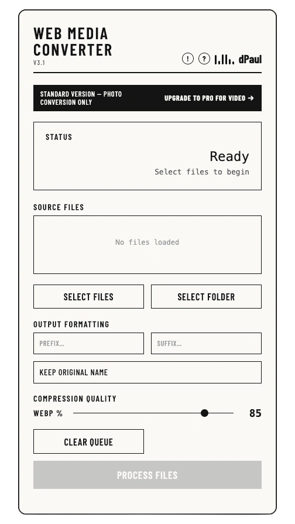
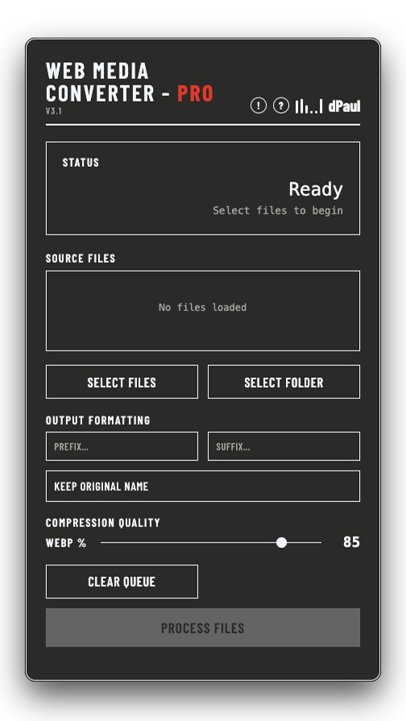

WMC batch-converts PNG, JPG and video into WebP and AVIF — same look, a fraction of the weight. Faster pages, better rankings, fewer visitors bouncing before your hero image even loads.


Every uncompressed PNG your visitors download is time you're spending against yourself — slower first paint, worse Core Web Vitals, lower search rankings. Most sites never fix it because doing it by hand, file by file, is tedious. WMC does the whole folder in one pass.
Illustrative figures based on typical PNG/JPG → WebP/AVIF conversions. Real batch conversion walkthrough below.
A full folder of images and video, converted to WebP and WebM in one pass — with the exact file size reduction shown per file as it happens.